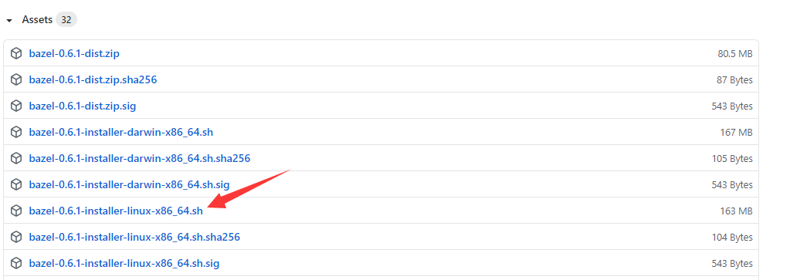
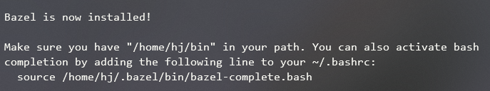
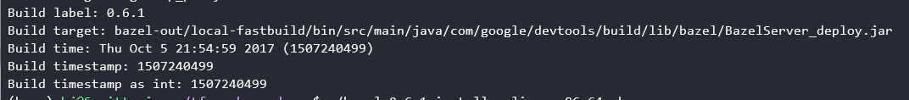

因为要搞一个tf的环境，windows咋配都不行，所以在服务器安装了bazel。
准备
首先需要去下载一个bazel的安装包，下载链接：https://github.com/bazelbuild/bazel/releases
我下载的是一个比较旧的https://github.com/bazelbuild/bazel/releases?after=0.7.0 中的0.6.1，可以根据需要安装。
安装的路径在Assets里，这里就是：

右键复制链接，准备去服务器上下载（亲测会快一点）
复制好链接后，准备放这个安装文件夹的链接后，在Ubuntu命令行输入：
1 | wget https://github.com/bazelbuild/bazel/releases/download/0.6.1/bazel-0.6.1-installer-linux-x86_64.sh |
然后就开始下载啦
安装
下载完之后准备进行安装，安装的话需要管理员账号安装一些依赖
1 | sudo apt-get install pkg-config zip g++ zlib1g-dev unzip python |
安装完依赖之后就可以切换成自己的账户了
先改变一下权限，然后直接运行脚本
1 | chmod +x bazel-0.6.1-installer-linux-x86_64.sh |
这里的–user不是真的让你指定user啊，只是一个配置项，加上就行了
然后会提示安装成功~

当然安装完还需要配置一下路径，在~/.bashrc文件中加上bin路径，然后生效
1 | vim ~/.bashrc |
打开后在末尾加上：
1 | export PATH="$PATH:$HOME/bin" |
使之生效：
1 | source ~/.bashrc |
就完成了~
然后使用bazel version命令测试一下即可
